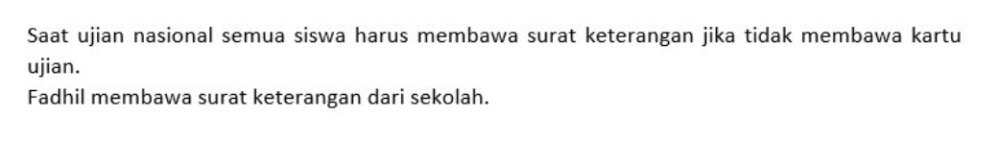
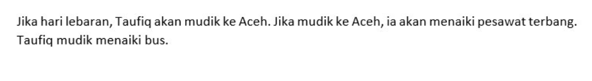

Soal Kecerdasan
- Pilihlah dua kata yang memiliki makna yang sama!
- MITRA
- CABANG
- SAUDARA
- TEMAN
- TIM
- Pilihlah dua kata yang memiliki makna yang sama!
- WAJIB
- UTAMA
- PERTAMA
- PRIMER
- PENTING
- Pilihlah dua kata yang memiliki makna yang sama!
- HARGA DIRI
- PRESTISE
- WIBAWA
- KEKUASAAN
- TERPANDANG
- Pilihlah dua kata yang memiliki makna yang sama!
- TARAF
- TANGGA
- DERAJAT
- KEKUATAN
- INDIKATOR
- Pilihlah dua kata yang memiliki makna yang sama!
- INSTRUKSI
- SERIUS
- KECENDERUNGAN
- TEKANAN
- TENDENSI
- Pilihlah dua kata yang memiliki makna yang sama!
- PERDEO
- BONUS
- DISKON
- CUMA-CUMA
- HADIAH
- Pilihlah dua kata yang memiliki makna yang sama!
- ANEH
- GASAL
- GANJIL
- GENAP
- UNIK
- Pilihlah dua kata yang memiliki makna yang sama!
- BAHARI
- DANAU
- LAUT
- PULAU
- MUTIARA
- Pilihlah dua kata yang memiliki makna berlawanan!
- ILEGAL
- FAKTA
- SAHIH
- SESUAI
- PALSU
- Pilihlah dua kata yang memiliki makna berlawanan!
- GENERIK
- DETAIL
- UNIVERSAL
- SPESIFIK
- BANYAK
- Pilihlah dua kata yang memiliki makna berlawanan!
- WIBAWA
- KALEM
- JEMAWA
- RENDAH HATI
- PESONA
- Pilihlah dua kata yang memiliki makna berlawanan!
- PIONER
- PEMIMPIN
- PENDIRI
- PEWARIS
- PENSIUN
- Pilihlah dua kata yang memiliki makna berlawanan!
- NIHIL
- NISBI
- MUSTAHIL
- UTUH
- MUTLAK
- Pilihlah dua kata yang memiliki makna berlawanan!
- OPAS
- PRAJURIT
- SIPIR
- DIREKTUR
- MAJIKAN
- Pilihlah dua kata yang memiliki makna berlawanan!
- ABADI
- ABAD
- FANA
- DUNIA
- HANCUR
- Pilihlah dua kata yang memiliki makna berlawanan!
- JURANG
- LERENG
- GUNUNG
- BUKIT
- LEMBAH
- Pilihlah dua kata yang tepat untuk melengkapi soal berikut ini! EVEREST : ... ≈ STATE OF UNITY :....
- PATUNG
- PUNCAK
- GUNUNG
- GEDUNG
- MENARA
- Pilihlah dua kata yang tepat untuk melengkapi soal berikut ini! GALI : ... ≈ ... : PISAU
- TANAH
- KUBUR
- POTONG
- ASAH
- SENJATA
- Pilihlah dua kata yang tepat untuk melengkapi soal berikut ini! ... : KOPI ≈ MAKAN : …
- HITAM
- MINUM
- TEH
- ROTI
- SEDUH
- Pilihlah dua kata yang tepat untuk melengkapi soal berikut ini! PINTU : ... ≈ .... : NAIK
- TANGGA
- ATAS
- KELUAR
- RUMAH
- MASUK
- Pilihlah dua kata yang tepat untuk melengkapi soal berikut ini! IKAN : ... ≈ SERANGGA : …
- INSANG
- KULIT
- AIR
- TRAKEA
- POHON
- Pilihlah dua kata yang tepat untuk melengkapi soal berikut ini! KUINTAL : ... ≈ HASTA : …
- KARUNG
- BERAT
- SERATUS BUAH
- PANJANG
- TANGAN
- Pilihlah dua kata yang tepat untuk melengkapi soal berikut ini! MENIUP : … ≈ MEMUKUL : …
- DINGIN
- SAKIT
- DRUM
- ANGIN
- BALON
- Pilihlah dua kata yang tepat untuk melengkapi soal berikut ini! ... : MAKAN ≈ UJIAN : ...
- MINUM
- PUASA
- BELAJAR
- LAPAR
- NYONTEK
- Pilihlah dua kata yang tepat untuk melengkapi soal berikut ini! ... : PESAWAT ≈ PRAMUSAJI : ...
- MUSISI
- PEMERAN
- TEATER
- BUKU
- TELEVISI
- Pilihlah dua kata yang tepat untuk melengkapi soal berikut ini! PISAU : TAJAM ≈ ... : ...
- OBENG
- TUMPUL
- OTAK
- ASAH
- CERDAS
- Pilihlah satu kata yang memiliki makna yang paling jauh dari 4 kata lainnya!
- MOBIL
- TANAH
- RUMAH
- MOTOR
- LAPTOP
- Pilihlah satu kata yang memiliki makna yang paling jauh dari 4 kata lainnya!
- JAM
- MIKROSKOP
- JANGKA SORONG
- NERACA
- TERMOMETER
- Pilihlah satu kata yang memiliki makna yang paling jauh dari 4 kata lainnya!
- KUBUS
- BALOK
- KERUCUT
- LIMAS
- PRISMA
- Pilihlah satu kata yang memiliki makna yang paling jauh dari 4 kata lainnya!
- KAYU
- BESI
- BATU
- TANAH
- ANGIN
- Pilihlah satu kata yang memiliki makna yang paling jauh dari 4 kata lainnya!
- AVES
- IKAN
- REPTIL
- AMFIBI
- MOLUSKA
- Pilihlah satu kata yang memiliki makna yang paling jauh dari 4 kata lainnya!
- BANTAL
- GULING
- SELIMUT
- KASUR
- SEPATU
- Pilihlah satu kata yang memiliki makna yang paling jauh dari 4 kata lainnya!
- HIDUNG
- TENGGOROKAN
- KERONGKONGAN
- PARU-PARU
- LARING
- Pilihan A
- Pilihan B
- Pilihan C
- Pilihan D
- Pilihan E
- Pilihan A
- Pilihan B
- Pilihan C
- Pilihan D
- Pilihan E
- Pilihan A
- Pilihan B
- Pilihan C
- Pilihan D
- Pilihan E
- Pilihan A
- Pilihan B
- Pilihan C
- Pilihan D
- Pilihan E
- Pilihan A
- Pilihan B
- Pilihan C
- Pilihan D
- Pilihan E
- Pilihan A
- Pilihan B
- Pilihan C
- Pilihan D
- Pilihan E
-
- Pilihan A
- Pilihan B
- Pilihan C
- Pilihan D
- Pilihan E
- 0,2 km + 0,15 hm - 60 dm =… m
-
- Pilihan A
- Pilihan B
- Pilihan C
- Pilihan D
- Pilihan E
- Sesorang memiliki tali sepanjang 2,88 m. Tali tersebut akan dililitkan pada sebuah pohon. Jika pohon tersebut memilikI panjang keliling 12 cm, banyak lilitan yang dapat terbentuk adalah...
- 42 lilitan
- 24 lilitan
- 36 lilitan
- 18 lilitan
- 20 lilitan
- Pilihan A
- Pilihan B
- Pilihan C
- Pilihan D
- Pilihan E
- Pilihan A
- Pilihan B
- Pilihan C
- Pilihan D
- Pilihan E
- 2,5 milenium - 10 windu + 40 dasawarsa =... tahun
- 1.072
- 3.200
- 2.820
- 1.225
- 2.336
- sebuah truk mengangkut beberapa jenis buah-buahan diantaranya 20 kuintal buah apel, 154 kg buah jeruk, dan 2 ton buah salak. Jika truk tersebut ditumpangi oleh 3 orang dengan berat badan rata-rata 54 kg, berat seluruh isi muatan truk tersebut adalah....
- 4.568 kg
- 3.765 kg
- 6.320 kg
- 5.224 kg
- 4.316 kg
- Pilihan A
- Pilihan B
- Pilihan C
- Pilihan D
- Pilihan E
- Toko Ms Mart menjual 2 jenis parsel kue lebaran yang terdiri dari roti basah dan roti kering. Paket A berisi 2 bungkus roti basah dan 3 bungkus roti kering dijual dengan harga Rp 95.000,-. Sedangankan parsel B yang terdiri dari 5 bungkus roti basah dan 2 bungkus roti kering dijual dengan harga Rp 155.000,-. Jika roti-roti tersebut juga dijual satuan, harga satu bungkus roti kering adalah...
- Rp 20.000
- Rp 15.000
- Rp 25.000
- Rp 30.000
- Rp 35.00
- Pilihan A
- Pilihan B
- Pilihan C
- Pilihan D
- Pilihan E
- Jadwal les Yonas adalah jam 13.00 WIB setiap hari Jumat. Dari rumahnya yang berada di Jakarta ia berangkat menggunakan mobil dengan kecepatan rata-rata 42 km/jam. Jika jarak rumah Yonas dengan tempat les adalah 105 km, agar tidak telat Yonas harus berangkat les pada jam...
- 11.00 WIB
- 10.40 WIB
- 10.30 WIB
- 11.20 WIB
- 09.50 WIB
- Sebuah restoran memiliki 5 orang chef senior dan 3 orang chef baru. Chef senior mampu menyelesaikan 1 pesanan dalam waktu 10 menit. sedangkan chef baru mampu menyelesaikan 1 pesanan selama 20 menit. Jika suatu hari restoran tersebut mendapatkan sebanyak 65 pesanan. Lama waktu yang dibutuhkan para chef tersebut menyelesaikan pesanan secara bersama-sama adalah....
- 115 menit
- 96 menit
- 130 menit
- 72 menit
- 100 menit
- Pak Alvin membeli 5 kg tepung, 3 kg gula, dan 4 kg telur dengan harga 1 kg tepung, gula, dan telur berturut-turut adalah Rp 15.000, Rp 18.000, dan Rp 24.000. dari semua bahan-bahan tersebut Pak Alvin dapat membuat 150 buah kue yang masing-masing kue tersebut dijual dengan harga Rp 5.000/buah. Keuntungan yang dapat diperoleh Pak Alvin adalah...
- Rp 420.000
- Rp 525.000
- Rp 600.000
- Rp 380.000
- Rp 515.000
- Jarak Bogor dan Jakarta pada peta adalah 2,5 cm. Jika skala peta tersebut 1 : 900.000 , jarak Bogor dan jakarta sebenarnya adalah...
- 27,5 km
- 25,5 km
- 35 km
- 22,5 km
- 32 km
- Hilmi mendapatkan uang jajan Rp 50.000 setiap harinya. Jika ia hanya menghabiskan Rp 20.000/hari, dan sisanya ditabung. Tabungan Hilmi akan berjumlah Rp 600.000 dalam waktu...
- 15 hari
- 20 hari
- 26 hari
- 32 hari
- 18 hari
- Biaya parkir di Mall BTM bogor adalah Rp 3.500 untuk satu jam pertama dan Rp 1.500/jam untuk jam-jam berikutnya. Jika Kevin menghabiskan waktu 3 jam untuk menonton di bioskop, 240 menit untuk berbelanja, maka biaya parkir yang harus di bayar Kevin adalah...
- Rp 14.500
- Rp 12.000
- Rp 15.000
- Rp 10.500
- Rp 12.500
- Stok persediaan makanan di Asrama Mitrasiswa cukup selama 25 hari untuk 30 orang. Jika terdapat 20 orang penghuni baru, stok makanan tersebut akan habis dalam waktu...
- 15 hari
- 10 hari
- 12 hari
- 16 hari
- 20 hari
- Om Rahysal memberikan uang jajan kepada tiga orang adiknya yaitu A, B, dan C dengan perbandingan berturut-turut 1 : 2 : 3.. Jika total uang jajan yang diberikan kepada 3 orang adiknya tersebut adalah Rp 180.000, selisih uang jajan A dan B adalah... /li>
- 45.000
- 15.000
- 30.000
- 20.000
- 25.000
- 1, 3, 12, 60, 180, , …, ...
- A, B, D, E, H,I , M, N… , …,
- A, Z, D, W, H,S , M, N, …, …
- 3, B 15, C, 20, E, 100, H, 105, L, …, …
- 196, k, 225, m, 256, o, 289 , …, …
- PILIHAN A
- PILIHAN B
- PILIHAN C
- PILIHAN D
- PILIHAN E
- Jika 2 + 5 = 14, 5 + 8 = 39, maka 8 + 11 =...
- Orang malas tidak perlu sukses untuk dapat hidup sejahtera
- Tidak ada orang malas yang hidupnya sejahtera
- Orang malas dapat hidup sejahtera
- Sebagian orang malas hidupnya sejahtera
- Hanya yang hidupnya sejahtera boleh manjadi malas
- Saya berhemat
- Saya tidak berhemat
- Selain saya, ada orang lain yang berhemat
- Saya berhemat namun tidak berinvestasi
- Tidak dapat ditarik kesimpulan
- Thailand adalah anggota ASEAN
- Thailand harus ikut konferensi
- Menteri Luar Negeri Thailand sedang menghadiri konferensi di Jakarta
- Thailand belum tentu anggota ASEAN
- Tidak dapat ditarik kesimpulan
- 
- Fadhil membawa surat keterangan dan kartu ujian
- Fadhil hanya membawa kartu ujian
- Fadhil tidak membawa kartu ujian
- Fadhil tidak membawa kartu ujian dan surat keterangan lainnya
- Fadhil tidak ikut ujian
- Tidak semua orang berdiri ketika Bapak Bupati memasuki ruangan
- Tidak ada orang yang tidak berdiri ketika Bapak Bupati memasuki ruangan
- Beberapa orang berdiri ketika Bapak Bupati memasuki ruangan
- Tidak ada orang yang berdiri ketika Bapak Bupati memasuki ruangan
- Semua orang tidak berdiri ketika Bapak Bupati memasuki ruangan
- Tidak semua nelayan bisa berenang dan berekonomi rendah
- Nelayan yang bisa berenang biasanya berekonomi rendah
- Sebagian nelayan yang bisa berenang, berekonomi rendah
- Nelayan yang berekonomi rendah tidak bisa berenang
- Semua nelayan bisa berenang, dan tidak berekonomi rendah
- Kadal tidak dapat berenang
- Ikan tidak terbang
- Ikan sama dengan kadal
- Kadal tidak dapat terbang dan berenang
- Tidak bisa ditarik kesimpulan
- Pak Geo memiliki sawah
- Pak Geo bukan seorang petani
- Pak Geo adalah seorang petani yang memiliki sawah
- Pak Geo bukan petani, namun memiliki sawah
- Tidak ada kesimpulan yang benar
- Marko membeli Sepatu
- Marko membeli sepatu di Kota Medan
- Marko tidak membeli sepatu
- Marko tidak pergi ke Kota Bogor
- Marko tidak singgah di Pasar Anyar
- Aura dan dan Fajar tinggal di Mitrasiswa
- Aura dan Fajar Bukan murid Mitrasiswa
- Aura dan Fajar adalah karyawan di Mitrasiswa
- Jadwal les Aura dan Fajar adalah hari Minggu
- Tidak ada kesimpulan yang benar
- Jika pendaftan calon anggota Polri dibuka pada bulan April, maka para murid akan mempersiakan berkas pendaftaran.
- Jika Mitrasiswa tidak libur pada bulan April, pendaftaran calon anggota Polri belum dibuka.
- Jika Mitrasiswa libur pada bulan April, maka para murid akan mepersiapkan berkas pendaftaran
- Jika Pendaftaran calon anggota Polri belum dibuka pada bulan April, maka para murid tidak mempersiapkan berkas pendaftaran
- Jika para murid belum mempersiapkan berkas pendaftaran, maka pendaftaran calon anggota Polri akan dibuka pada bulan Mei
- Yanto adalah wanita
- Yanto adalah laki-laki
- Yanto adalah laki-laki yang berparas cantik
- Yanto belum tentu wanita
- Yanto menyamar menjadi wanita

- Bulan ini belum terjadi Inflasi
- Bulan ini adalah bulan November
- Bulan November harga barang-barang tidak mahal
- Harga barang-barang murah kecuali bulan November
- Bulan ini bukan bulan November
- Sebagian profesor hukum adalah politikus
- Sebagian profesor hukum belum tentu merupakan anggota partai.
- Sebagian politikus adalah profesor hukum
- Semua politikus adalah profesor hukum
- Tidak ada profesor hukum yang menjadi politikus
- Sebagian apel berwarna hijau
- Ada apel yang bewarna merah
- Sebagian apel berwarna merah
- Ada apel yang berwarna merah dan hijau
- Semua apel tidak berwana merah
- 
- Taufiq mudik ke Aceh
- Taufiq tidak menaiki pesawat terbang
- Taufiq mudik bukan ke Aceh
- Taufiq tidak mudik
- Taufiq mudik ke Aceh dengan menaiki bus
- PILIHAN A
- PILIHAN B
- PILIHAN C
- PILIHAN D
- PILIHAN E
- PILIHAN A
- PILIHAN B
- PILIHAN C
- PILIHAN D
- PILIHAN E
- PILIHAN A
- PILIHAN B
- PILIHAN C
- PILIHAN D
- PILIHAN E
- PILIHAN A
- PILIHAN B
- PILIHAN C
- PILIHAN D
- PILIHAN E
- PILIHAN A
- PILIHAN B
- PILIHAN C
- PILIHAN D
- PILIHAN E
- PILIHAN A
- PILIHAN B
- PILIHAN C
- PILIHAN D
- PILIHAN E
- PILIHAN A
- PILIHAN B
- PILIHAN C
- PILIHAN D
- PILIHAN E
- PILIHAN A
- PILIHAN B
- PILIHAN C
- PILIHAN D
- PILIHAN E
- PILIHAN A
- PILIHAN B
- PILIHAN C
- PILIHAN D
- PILIHAN E
- PILIHAN A
- PILIHAN B
- PILIHAN C
- PILIHAN D
- PILIHAN E
- PILIHAN A
- PILIHAN B
- PILIHAN C
- PILIHAN D
- PILIHAN E
- PILIHAN A
- PILIHAN B
- PILIHAN C
- PILIHAN D
- PILIHAN E
- PILIHAN A
- PILIHAN B
- PILIHAN C
- PILIHAN D
- PILIHAN E
- PILIHAN A
- PILIHAN B
- PILIHAN C
- PILIHAN D
- PILIHAN E
- PILIHAN A
- PILIHAN B
- PILIHAN C
- PILIHAN D
- PILIHAN E
- PILIHAN A
- PILIHAN B
- PILIHAN C
- PILIHAN D
- PILIHAN E